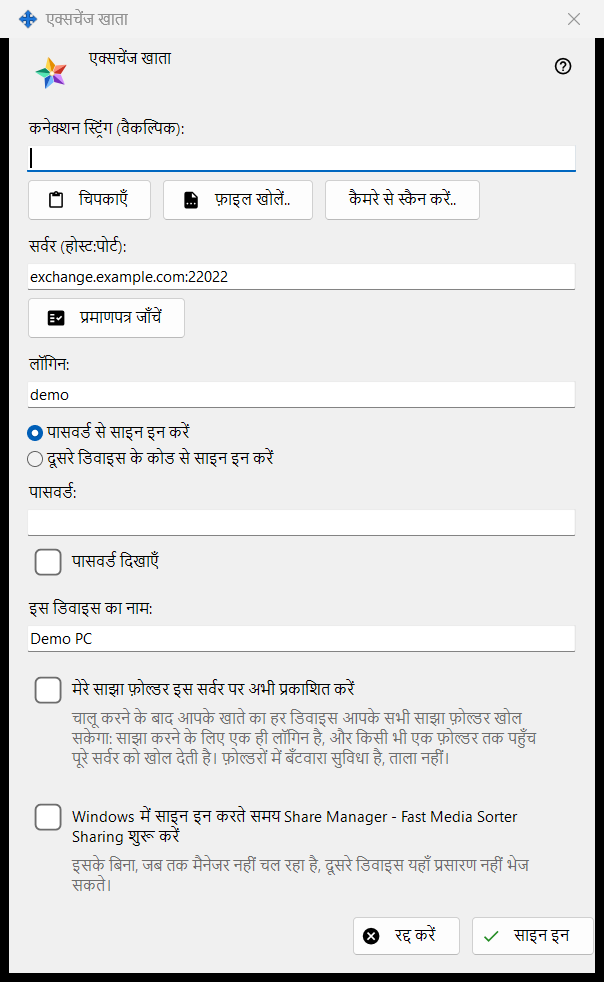
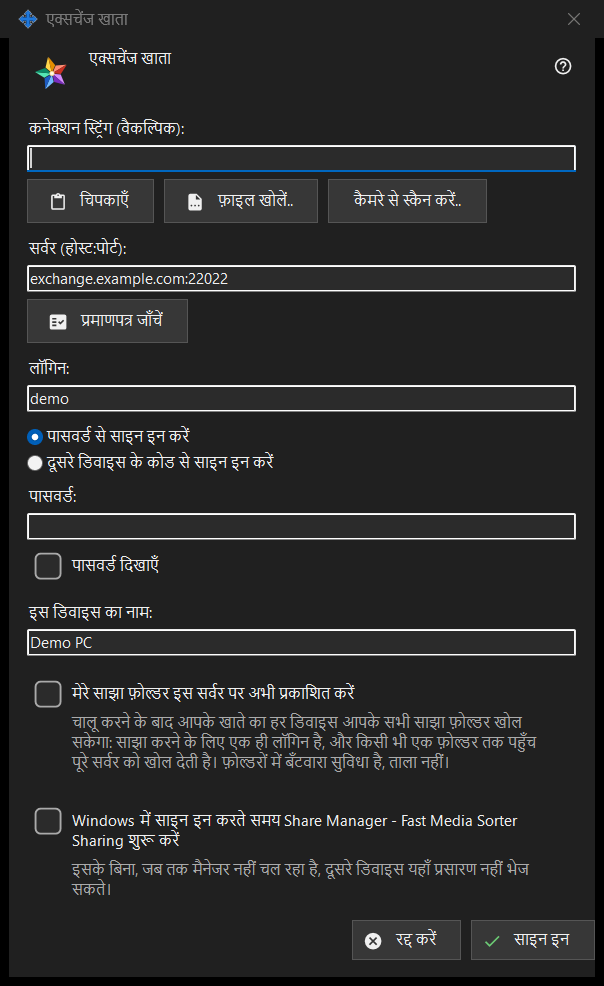

एक्सचेंज खाता
यह किस लिए है
इस पीसी को Media Exchange Server पर किसी खाते के डिवाइस के रूप में साइन इन करता है। यह विंडो Share Manager की सेटिंग के एक्सचेंज खाता पेज के साइन इन.. बटन से खुलती है, और एक्सचेंज सर्वर के ज़रिए प्रकाशित करें.. से भी खुलती है, जो इसे प्रकाशन वाले विकल्प पर पहले से निशान लगाकर खोलता है।


इस क्रम में
- चाहें तो कनेक्शन स्ट्रिंग चिपकाएँ, खोलें या स्कैन करें; वह सर्वर और लॉगिन भर देती है।
- प्रमाणपत्र जाँचें दबाएँ और, जब तक सिस्टम उस पर भरोसा न करता हो या स्ट्रिंग उसे साथ न लाई हो, फ़िंगरप्रिंट का संचालक वाले फ़िंगरप्रिंट से मिलान करें और इस प्रमाणपत्र पर भरोसा करें दबाएँ।
- लॉगिन और पासवर्ड या पेयरिंग कोड दर्ज करें।
- डिवाइस का नाम और विकल्प तय करें।
- साइन इन दबाएँ।
तत्व
कनेक्शन स्ट्रिंग
कनेक्शन स्ट्रिंग (वैकल्पिक) फ़ील्ड में वह स्ट्रिंग आती है जिसे आप चिपकाएँ से चिपकाते हैं, फ़ाइल खोलें.. से .fmsexch फ़ाइल या QR छवि से लोड करते हैं, या कैमरे से स्कैन करें.. से पढ़ते हैं। वह केवल सर्वर और लॉगिन भरती है; साइन इन दबाने तक कुछ भी कनेक्ट नहीं होता। फ़िंगरप्रिंट वाली स्ट्रिंग उसी प्रमाणपत्र को पिन कर देती है, इसलिए हाथ से मिलान करने को कुछ नहीं रहता। निमंत्रण वाली स्ट्रिंग विंडो को पंजीकरण पर ले जाती है। अनुपयोगी स्ट्रिंग पर एक पंक्ति में अस्वीकृति मिलती है।
सर्वर और प्रमाणपत्र
प्रमाणपत्र जाँचें सर्वर (होस्ट:पोर्ट) में लिखे सर्वर से कनेक्ट होता है और सर्वर के प्रमाणपत्र का फ़िंगरप्रिंट दिखाता है। यदि सिस्टम प्रमाणपत्र पर भरोसा करता है, तो कुछ पिन करने की ज़रूरत नहीं। नहीं तो फ़िंगरप्रिंट का मिलान उस फ़िंगरप्रिंट से करें जो सर्वर संचालक ने आपको दिया है और इस प्रमाणपत्र पर भरोसा करें दबाएँ; सिस्टम के लिए अज्ञात प्रमाणपत्र को केवल यही बटन स्वीकार करता है। सर्वर का पाठ बदलने पर जाँच भुला दी जाती है। जब तक कोई प्रमाणपत्र भरोसेमंद न हो, Enter कुछ नहीं करता, इसलिए कोई पासवर्ड ऐसे सर्वर तक नहीं जाता जिसकी किसी ने पुष्टि न की हो।
लॉगिन, पासवर्ड और पेयरिंग कोड
लॉगिन दर्ज करें और पासवर्ड से साइन इन करें (पासवर्ड, साथ में पासवर्ड दिखाएँ) या दूसरे डिवाइस के कोड से साइन इन करें (पेयरिंग कोड, जो उसी खाते का कोई दूसरा डिवाइस जारी करता है) चुनें। मान भेजते ही फ़ील्ड साफ़ हो जाती है, परिणाम चाहे जो हो; डिवाइस केवल एक टोकन रखता है, पासवर्ड कभी नहीं।
निमंत्रण से पंजीकरण
जब स्ट्रिंग में निमंत्रण हो, तो साइन इन के दोनों विकल्पों की जगह पंजीकरण आ जाता है: खाते का पासवर्ड और पासवर्ड एक बार और नया पासवर्ड तय करते हैं, जो दिखाई गई नीति पर खरा उतरना चाहिए (कम से कम 10 वर्ण, एक बड़ा और एक छोटा लैटिन अक्षर और एक अंक), और बटन पर खाता बनाएँ लिखा होता है।
डिवाइस का नाम और विकल्प
इस डिवाइस का नाम (अधिकतम 64 वर्ण) शुरू में कंप्यूटर का नाम होता है। मेरे साझा फ़ोल्डर इस सर्वर पर अभी प्रकाशित करें बंद रहता है, जब तक आप एक्सचेंज सर्वर के ज़रिए प्रकाशित करें.. से न आए हों; चालू करने पर आपके खाते का हर डिवाइस आपके सभी साझा फ़ोल्डर खोल सकता है, क्योंकि साझा करने का लॉगिन एक ही है। आख़िरी विकल्प आपके Windows में साइन इन करते ही Share Manager शुरू कर देता है (डिफ़ॉल्ट रूप से बंद), ताकि दूसरे डिवाइस इस पीसी पर प्रसारण भेज सकें।
एक समय में एक सर्वर
एक डिवाइस एक ही सर्वर का होता है। दूसरे सर्वर में साइन इन करने पर पूछा जाता है कि मौजूदा सर्वर छोड़ना है या नहीं, और पुराने सर्वर पर प्रकाशन रुक जाता है। संपर्क विफल होने के बाद Why doesn't it connect?.. बटन कनेक्शन परीक्षण खोलता है।
प्रबंधक सेटिंग · SFTP साझाकरण सेटिंग · एक्सचेंज सर्वर सेटिंग